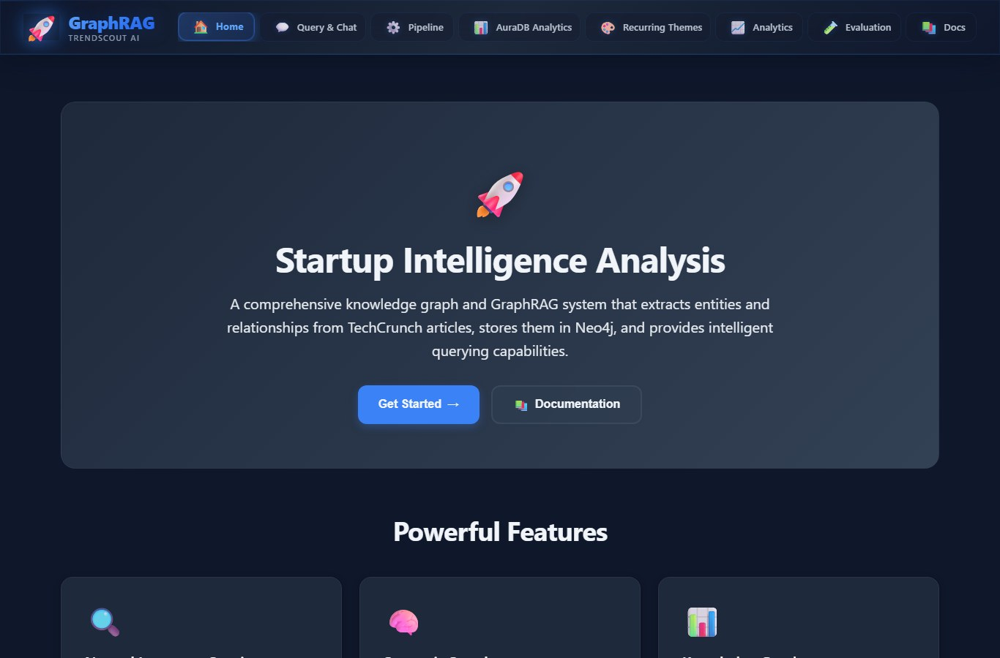
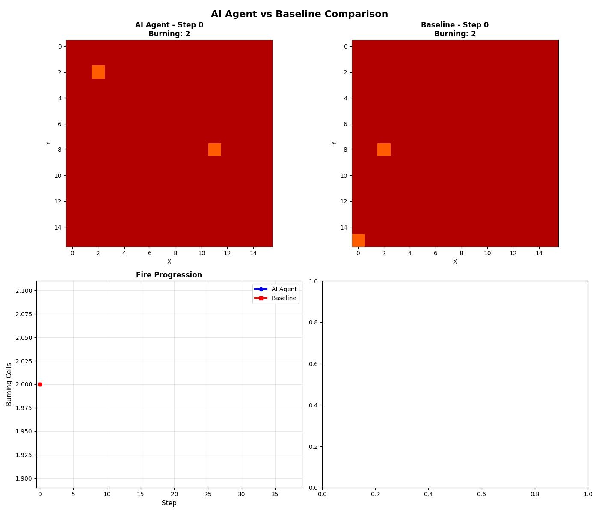
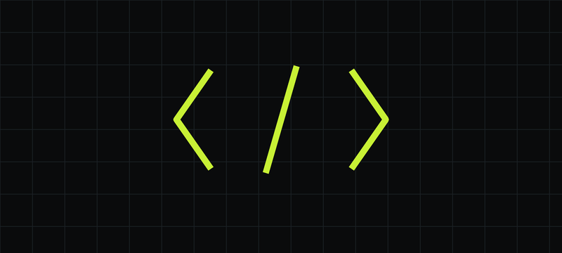
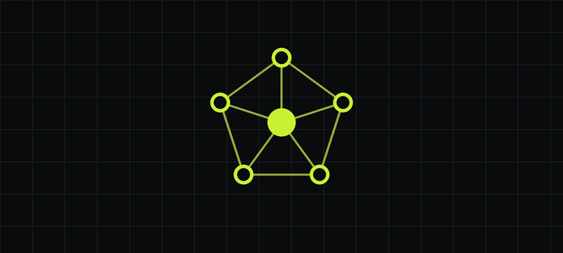
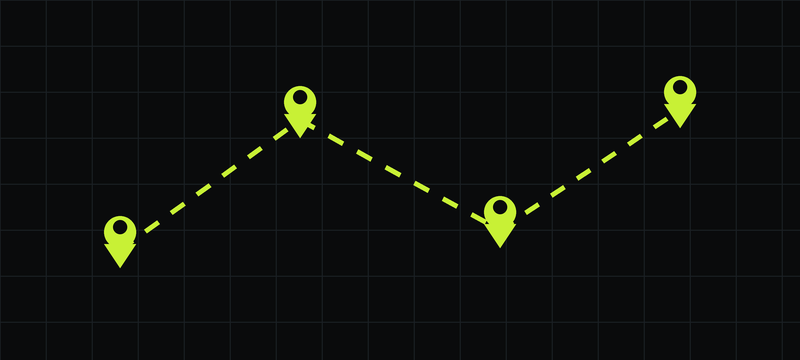
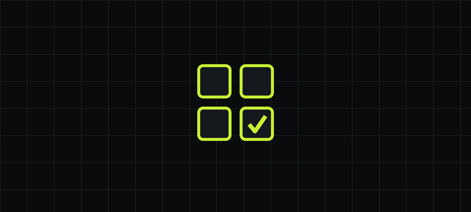

🏆 AMD / Meta Hackathon Winner
Synthetic Data Generation Pipeline for LLM Reasoning
A multi-stage synthetic data generation pipeline for the Meta AI / AMD / PyTorch Synthetic Data AI Agents Challenge.
A relationship-aware system that generates high-quality question-answer pairs for training LLMs on reasoning tasks
involving character relationships and seating arrangements. Implemented GRPO with custom reward functions, structured
JSON output enforcement, and identified critical LLM vulnerabilities like alphabetical sorting bias. Fine-tuned
Llama 3 70B, Qwen3-Next 80B MoE, and Phi-4 using LoRA, SFT, and GRPO.
📖 Read the technical deep dive →
PythonPyTorchGRPO
LoRA Fine-tuningLlama 3Qwen3
Phi-4Structured OutputReinforcement Learning

Startup Intelligence Analysis App
Production-ready GraphRAG app: FastAPI backend, Neo4j graph DB, and OpenAI GPT-4o for query processing. 40+ API endpoints, Redis caching (200× faster cached responses), Prometheus monitoring, 70%+ test coverage, Docker + CI/CD.
GraphRAGFastAPINeo4j
GPT-4oRedisDocker

Wildfire Control RL Agent
Reached the Final Four with a reinforcement-learning system using Llama 3.2 with LoRA fine-tuning. Trained on 16,000+ demonstrations using GRPO and behavior cloning on AMD MI100 GPU. Deployed to Hugging Face Spaces with optimized inference.
Reinforcement LearningLlama 3.2LoRA
GRPOHugging Face

MakerBOT — AI Tutor
An AI tutor that answers math, physics & science questions and generates interactive React visualizations in real time using the Claude API. Claude returns explanation + executable component code, safely rendered inside a sandboxed iframe.
Anthropic APIFastAPIReact 18
Three.jsTailwind

Graph Processing at Scale
Large-scale graph data-processing pipeline using Neo4j, Terraform, AWS, Docker, Kubernetes, and Kafka. Processed the NYC Yellow Cab dataset into graph nodes/relationships, implementing PageRank and BFS with Neo4j Graph Data Science.
Neo4jKubernetesKafka
AWSTerraform

NomadSync — AI Travel Planner
Collaborative AI trip planner where groups plan via natural-language chat. A LangGraph agent extracts trip memory with confidence scoring, versions plans with rollback, pulls live flight data (Amadeus), and streams updates over Server-Sent Events.
LangGraphOpenAIExpress
MongoDBReact

AI-Generated Image Classification
Deep-learning model to classify AI-generated vs. real images using ResNet50v2 and EfficientNetV2. Preprocessed CFAKE & ArtiFact datasets with augmentation, performed hyperparameter tuning, and evaluated with AUC, accuracy, precision, recall, and F1.
Deep LearningCNNsResNet
Transfer LearningPyTorch